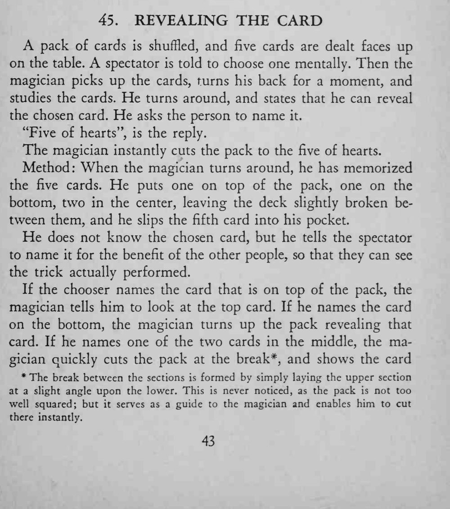
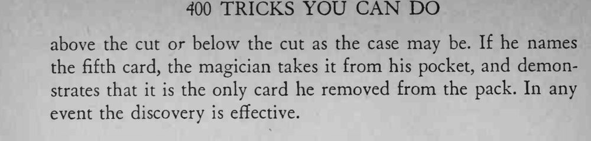

五张牌摊开让观众心里选定一张，魔术师背过身再转回来，听完牌名就把牌堆切到那张牌上，并把它翻出来。
break 只是把上半叠略微倾斜地搁在下半叠上，收牌不要太整齐，切牌时才能一找就准。


A pack of cards is shuffled, and five cards are dealt faces up on the table. A spectator is told to choose one mentally. Then the magician picks up the cards, turns his back for a moment, and studies the cards. He turns around, and states that he can reveal the chosen card. He asks the person to name it. "Five of hearts", is the reply. The magician instantly cuts the pack to the five of hearts. Method: When the magician turns around, he has memorized the five cards. He puts one on top of the pack, one on the bottom, two in the center, leaving the deck slightly broken between them, and he slips the fifth card into his pocket. He does not know the chosen card, but he tells the spectator to name it for the benefit of the other people, so that they can see the trick actually performed. If the chooser names the card that is on top of the pack, the magician tells him to look at the top card. If he names the card on the bottom, the magician turns up the pack revealing that card. If he names one of the two cards in the middle, the magician quickly cuts the pack at the break*, and shows the card * The break between the sections formed by simply laying the upper section at a slight angle upon the lower. This never noticed, as the pack not too well squared; but serves as a guide to the magician and enables him to cut there instantly. above the cut or below the cut as the case may be. If he names the fifth card, the magician takes it from his pocket, and demonstrates that it is the only card he removed from the pack. In any event the discovery is effective.